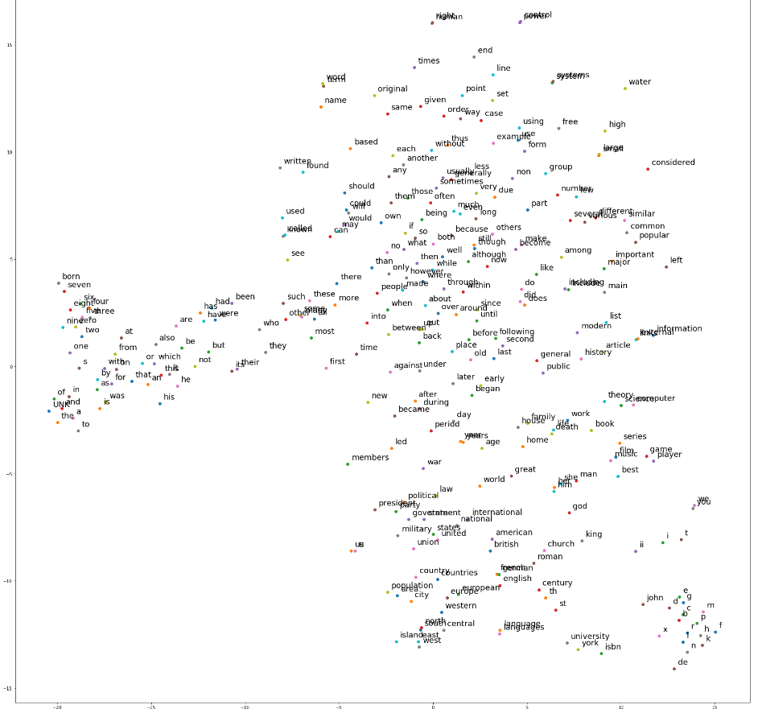

MLDS 作业报告-1: Language Modeling
Table of Contents
作业说明
| Course | Semester | HW,Link | Task | Dataset | size | sample_num |
|---|---|---|---|---|---|---|
| MLDS | 2017 Spring HW1 | 作业链接 | HW1 Language Model | text8 wiki dump | 100MB | 17,005,207 |
- 要求在 充分考虑运算效率 的前提下构建 word2vec.
- 详细说明选择的技术(附上数学表达式及其理解).
- 限制使用 tensorflow 1.0+
- 注明 CPU GPU 型号/频率, 及神经网络训练时间.
个人分析
word2vec 一般都使用 one-hot encoding based on vocabulary, 而 vocabulary 的 size 一般都是 10w+(业界肯定更高), 之前自己也做过基于 RNN 的 IMDB(keras 内置数据集, size=84MB) Sentimen Analysis, 1060 2G显存在 vocabulary=30,000 时只 tokenize 就用时近两分钟.
我分析训练较慢的主要原因是: one-hot 会对全连接神经网络的参数量剧增, 由于计算量太大, 不但NN难于训练, 还容易造成 overfitting 和 gradient vanishing and exploding 问题. 初步解决方法: 选择使用 sampling based method — NCE.
技术说明
word2vec
Word2Vec NLP 常用模型, 用于将非数值型数据如字符串, 转换向量形式以便利用 GD
去训练, 最常用的方法是 one-hot encoding, 但 one-hot 只注重 出现与否 , 不承载
上下文信息(context information)和词汇顺序信息(word ordering), 而这两者对于单词的词性/意义/感情色彩有决定性的作用. 由此 word2vec 应运而生, 他部分解决了 承载环境信息 的任务. 目的是: 让意义相同的 words 映射到 embeding space 中距离相近的位置上.
比如,下面的例子:
- 猫 是我最喜欢的宠物;
- 狗 是我最喜欢的宠物;
当把 "猫" 和 "狗" 喂进神经网络时, 得到的神经网络输出(可以把NN看成feature
transformation函数)的结果向量, 较为相似.
\(fn("cat")\approx{fn("dog")}\)
Skip-Gram 和 CBOW 介绍
word2vec 在 NLP 领域一般有两个变种: skip-gram 和 cbow.
- skip-gram 通过 target word 预测 context words;
- cbow 通过 context words 预测 target word.
两者表述相反, 但对应的 NN 结构类似,
| Skip-gram | CBOW |
|---|---|
 |
 |
举例说明两者在构建样本时的不同:
猫是我最喜欢的宠物;
cbow 则会构建这样的训练样本:
| x | y | |----------+----------| | (猫, 我) | 是 | | (是, 最) | 我 | | (我, 喜) | 最 |
skip-gram 会构建这样的训练样本:
| x | y | |----------+----------| | 是 | 猫 | | 是 | 我 | | 我 | 是 | | 我 | 最 |
从概率的角度分析, cbow 可以让 sequence 信息分布变得更平滑, 因为他是把整个 context words 作为一个训练样本. 对于数据集较小的时候, cbow 由于每次训练都考虑了更多其他单词的信息, 所以更合适; skip-gram 收集到每两个单词的正反顺序信息, 所以当数据集较大的时候, 会更精确.
本次作业仅 focus 在 skip-gram 上.
NCE
交叉熵缺点
Skip-gram 基于极大似然使用交叉熵来评价和优化模型:
\[ \arg\min_{\Theta}\sum_{i=1}^{N}{-\log\mathrm{P}(\boldsymbol{y}^{(i)}|\boldsymbol{x}^{(i)},\Theta)} \]
对于一个 \(V\) 分类问题, (\(V\) 是单词表大小) :
\(y=1,\cdots,V\)
假设对于样本 x , 他的标签的 Bernoulli 分布记做:
\[\Pr(y|\boldsymbol{x})\sim\mathrm{Categorical}(y|\boldsymbol{x};\boldsymbol{\rho})=\prod_{i=1}^{V}\rho_{i}^{1(y;y=i)}.\]
我们很自然的会想到用 V 个 softmax units 作为输出层, 将第 L 层的第 i 个 softmax 记做 \(a_i^{(L)}\), 将第 L 层的第 i 个 softmax 的输出 (L 层)输出记做 \(z_i^{(L)}\), 于是有:
\[ a_i^{(L)}=\rho_i=\mathrm{softmax}(\boldsymbol{z}^{(L)})_{i}=\frac{\exp(z_{i}^{(L)})}{\sum_{j=1}^{{\color{red}V}}\exp(z_{j}^{(L)})}. \]
最终代价函数就可以写成:
\[\arg\min_{\Theta}\sum_{i}-\log\prod_{j}\left(\frac{\exp(z_{j}^{(L)})}{\sum_{k=1}^{{\color{red}V}}\exp(z_{k}^{(L)})}\right)^{1(y^{(i)};y^{(i)}=j)}=\arg\min_{\Theta}\sum_{i}\left[-z_{y^{(i)}}^{(L)}+\log\sum_{k=1}^{{\color{red}V}}\exp(z_{k}^{(L)})\right]\]
模型想要达到的效果是, 如果一个样本属于 j 类, 那么 \(\rho_j\) 应该最大.但是, 很明显可以看到这个模型的计算复杂度是与 vocabulary size 直接相关的. 这就是普通 NN 处理 word2vec 的缺点.
下面引入 sample based method, 来减少输出层神经元数量.
基于抽样的 softmax
- 假设我们有一个 batch_size = T 的训练数据, \(w_1,w_2,w_3,⋯,w_T\) .
- 使用 context_window_size = n,
- 假设 embedding 输入层标记为 \(v_w\) , 维度是 \(d\), embedding 输出层标记为 \(v_w^'\).
\[C(\theta) = -z_{y^{(i)}}^{(L)} + log \sum_{k=1}^{V} exp(z_{k}^{(L)})\]
计算 \(C(\theta)\) 对于模型参数 \(\theta\) 的梯度, 经过化简与处理可以得到:
\[ \nabla_{\theta}C(\theta) = - \left[ \nabla_{\theta} (\,z_{y^{(i)}}^{(L)}\,) + \sum_{j=1}^{V} \frac{exp(z_j^{(L)})} {\sum_{k=1}^{V} exp(z_k^{(L)})} \nabla_{\theta}(-z_{j}^{(L)})\right]\]
其中 \(\frac{exp(\,z_j^{(L)}\,)} {\sum_{k=1}^{V} \, exp(\,z_k^{(L)}\,)}\) 是 \(P(z_{j}^{(L)})\) 的近似, 带入之后:
\[ \nabla_{\theta}C(\theta) = - \left[ \nabla_{\theta} (\,z_{y^{(i)}}^{(L)}\,) + \sum_{j=1}^{V} P(z_j^{(L)}) \nabla_{\theta} (-z_j^{(L)}) \right] \]
\[ \sum_{j=1}^{V} P(z_j^{(L)}) \nabla_{\theta} (-z_j^{(L)}) = \mathop{\mathbb{E}}_{z_j \sim P} [ \nabla_{\theta}(-z_{j}^{(L)}) ] \]
\[ \nabla_{\theta}C(\theta) = - \left[\nabla(\,z_{y^{(i)}}^{(L)}\,) +\mathop{\mathbb{E}}_{z_j\sim P} [\nabla_{\theta}(-z_{j}^{(L)}) ]\right] \]
下面不是处理 vocabulary 中所有的单词, 而是根据某个分布 Q 从 V 中 sample 出一个子集, \(V^'\), 那么上式第二项可以写成:
\[ \mathop{\mathbb{E}}_{z_j \sim P} [ \nabla_{\theta}(-z_{j}^{(L)}) ] \approx \sum_{\boldsymbol {x}_i \in {\color{red}V^{\color{red}'}}} \frac{exp(z_{j}^{(L)})-log(Q(\boldsymbol {x}_i))}{ \sum_{\boldsymbol {x}_k \in {\color{red}V^{\color{red}'}}} exp(z_{j}^{(L)})-log(Q(\boldsymbol {x}_k))}\]
\[ Q(\mathbf {x}_i)= \begin{equation} \left\{ \begin{array}{rl} \frac{1}{|V_{i}^{'}|} \; if \; \boldsymbol {x}_i \in V_{i}^{'}\\ 0, otherwise \end{array} \right. \end{equation} \]
Noise Contrastive Estimation (NCE)
对于 NCE 这里只做介绍, 具体公式详见: 这篇论文
上面分析得知, 传统 NN 使用交叉熵做 error evaluation, 来衡量产生分布与目标分布之间的"距离". 所以他希望整个神经网络输出一个概率分布, 为了得到对概率值的模拟, 一般使用 softmax 对输出做 normalization, 但是当分类数量较大时, softmax 会带来极大运算消耗. NCE 的出现就是为了解决 softmax 问题而生:
NCE 把一个多分类问题转换成二分类问题
每一次训练, NCE 使用一个"真"样本 (true_center, true_conetext), 和 k 个随机
"假"样本 (true_center, random_context) ("假"样本抽样过程叫做 "negtative
sampling") 做为训练目标, 训练网络区分 "真假".

- 原始代价函数: \[C(\theta) = -z_{y^{(i)}}^{(L)} + log \sum_{k=1}^{V} exp(z_{k}^{(L)})\]
- sample based softmax 代价函数: \[ \nabla_{\theta}C(\theta) = - \left[\nabla(\,z_{y^{(i)}}^{(L)}\,) +\mathop{\mathbb{E}}_{z_j\sim P} [\nabla_{\theta}(-z_{j}^{(L)}) ]\right] \]
- NCE 代价函数: \[C(\theta)=-\sum_{i=1}^{V}[log\frac{exp(\,z_{i}^{(L)}\,)}{ exp(\,z_{i}^{(L)}\,)+kQ(\boldsymbol{x})}+logP(1-\frac{ exp(\,z_{i}^{(L)}\,)}{exp(\,z_{i}^{(L)}\,)+kQ(\boldsymbol{x})}] \]
比较有意思的是, 当 k 取值越来越大时 NCE 的导数与 softmax 的梯度越来越近. 这也从另一个角度说明, 我们实际是通过 给模型增加自由度, 来换取计算复杂度的下降. 根据 VC-dimension 理论, 当我们引入参数时实际是在增加模型复杂度, 而增加模型复杂度会造成模型泛化能力不足, 这是一个 tradeoff. 但这里的 tradeoff 是很合理的:
提升模型复杂度带来的损失, 远小于, 降低计算量所带来的收益
项目代码
数据准备
数据下载
定义一些工具函数, 用来产生批次样本. 首先, 把 corpus 读入内存, 使用 corpus 中出现频率最高的单词建立 vocabulary, 同时, 建立两个 python dict, 一个 map words to indices 另一个 map indices to words. 对于每一个 center word, 打包该词与其 context words 组成一个训练样本 — (center word, context words), 编写函数产生批次样本.
"""The content of process_data.py""" from collections import Counter import random import os import sys sys.path.append('..') import zipfile import numpy as np from six.moves import urllib import tensorflow as tf # Parameters for downloading data DOWNLOAD_URL = 'http://mattmahoney.net/dc/' EXPECTED_BYTES = 31344016 DATA_FOLDER = 'data/' FILE_NAME = 'text8.zip' def make_dir(path): """ Create a directory if there isn't one already. """ try: os.mkdir(path) except OSError: pass def download(file_name, expected_bytes): """ Download the dataset text8 if it's not already downloaded """ file_path = DATA_FOLDER + file_name if os.path.exists(DATA_FOLDER): print("Data_folder ready") else: make_dir(DATA_FOLDER) if os.path.exists(file_path): print("Dataset ready") return file_path file_name, _ = urllib.request.urlretrieve(DOWNLOAD_URL + file_name, file_path) file_stat = os.stat(file_path) if file_stat.st_size == expected_bytes: print('Successfully downloaded the file', file_name) else: raise Exception( 'File ' + file_name + ' might be corrupted. You should try downloading it with a browser.') return file_path def read_data(file_path): """ Read data into a list of tokens""" with zipfile.ZipFile(file_path) as f: words = tf.compat.as_str(f.read(f.namelist()[0])).split() # tf.compat.as_str() converts the input into the string return words def build_vocab(words, vocab_size): """ Build vocabulary of VOCAB_SIZE most frequent words """ dictionary = dict() count = [('UNK', -1)] count.extend(Counter(words).most_common(vocab_size - 1)) index = 0 make_dir('processed') with open('processed/vocab_1000.tsv', "w") as f: for word, _ in count: dictionary[word] = index if index < 1000: f.write(word + "\n") index += 1 index_dictionary = dict(zip(dictionary.values(), dictionary.keys())) return dictionary, index_dictionary def convert_words_to_index(words, dictionary): """ Replace each word in the dataset with its index in the dictionary """ return [dictionary[word] if word in dictionary else 0 for word in words] def generate_sample(index_words, context_window_size): """ Form training pairs according to the skip-gram model. """ for index, center in enumerate(index_words): context = random.randint(1, context_window_size) # get a random target before the center word for target in index_words[max(0, index - context): index]: yield center, target # get a random target after the center wrod for target in index_words[index + 1: index + context + 1]: yield center, target def get_batch(iterator, batch_size): """ Group a numerical stream into batches and yield them as Numpy arrays. """ while True: center_batch = np.zeros(batch_size, dtype=np.int32) target_batch = np.zeros([batch_size, 1]) for index in range(batch_size): center_batch[index], target_batch[index] = next(iterator) yield center_batch, target_batch def get_batch_gen(index_words, context_window_size, batch_size): """ Return a python generator that generates batches""" single_gen = generate_sample(index_words, context_window_size) batch_gen = get_batch(single_gen, batch_size) return batch_gen def process_data(vocab_size): """ Read data, build vocabulary and dictionary""" file_path = download(FILE_NAME, EXPECTED_BYTES) words = read_data(file_path) dictionary, index_dictionary = build_vocab(words, vocab_size) index_words = convert_words_to_index(words, dictionary) del words # to save memory return index_words, dictionary, index_dictionary
/home/yiddi/anaconda3/envs/tensorflow/lib/python3.6/site-packages/h5py/__init__.py:34: FutureWarning: Conversion of the second argument of issubdtype from `float` to `np.floating` is deprecated. In future, it will be treated as `np.float64 == np.dtype(float).type`. from ._conv import register_converters as _register_converters
检测单个批次样本的形状
vocab_size = 10000 window_sz = 5 batch_sz = 64 index_words, dictionary, index_dictionary = process_data(vocab_size) batch_gen = get_batch_gen(index_words, window_sz, batch_sz) X, y = next(batch_gen) print(X.shape) print(y.shape)
Data_folder ready Dataset ready (64,) (64, 1)
打印出前 10 对样本数据 (center word, context word):
for i in range(10): # print out the pairs data = index_dictionary[X[i]] label = index_dictionary[y[i,0]] print('(', data, label,')')
( anarchism originated ) ( anarchism as ) ( originated anarchism ) ( originated as ) ( originated a ) ( originated term ) ( originated of ) ( as originated ) ( as a ) ( a as )
打印出这 10 对样本对应的原始 corpus 数据.
for i in range(10): # print out the first 10 words in the text print(index_dictionary[index_words[i]], end=' ')
anarchism originated as a term of abuse first used against
可以看到, 语句与其产生的样本是匹配的.
数据加载
这里使用 Tensorflow 提供的 data input pileline 来作为模型的输入.他能构建更复杂的输入队列, 比 feed_dict 也更有效率.
BATCH_SIZE = 128 dataset = tf.contrib.data.Dataset.from_tensor_slices((X, y)) dataset = dataset.repeat() dataset = dataset.batch(BATCH_SIZE) iterator = dataset.make_one_shot_iterator() next_batch = iterator.get_next()
WARNING:tensorflow:From <ipython-input-5-7ebc9cc946e4>:2: Dataset.from_tensor_slices (from tensorflow.contrib.data.python.ops.dataset_ops) is deprecated and will be removed in a future version. Instructions for updating: Use `tf.data.Dataset.from_tensor_slices()`.
运行会话, 检测批次数据与批次标签的形状:
with tf.Session() as sess: data, label = sess.run(next_batch) print(data.shape) print(label.shape)
(128,) (128, 1)
图构造 MLALGO
按照以下步骤建图:
- 创建图首:
- 输入
- 输出
- 创建图中:
- 一神: layers' weights and bias
- 两函: err_fn, loss_fn
- 三器: initializer, optimizer, saver
- 创建图尾:
- 精度计算,
- 模型评估
from __future__ import absolute_import # use absolute import instead of relative import # '/' for floating point division, '//' for integer division from __future__ import division from __future__ import print_function # use 'print' as a function import os import numpy as np import tensorflow as tf from process_data import make_dir, get_batch_gen, process_data class SkipGramModel: """ Build the graph for word2vec model """ def __init__(self, hparams=None): if hparams is None: self.hps = get_default_hparams() else: self.hps = hparams # define a variable to record training progress self.global_step = tf.Variable(0, dtype=tf.int32, trainable=False, name='global_step') def _create_input(self): """ Step 1: define input and output """ with tf.name_scope("data"): self.centers = tf.placeholder(tf.int32, [self.hps.num_pairs], name='centers') self.targets = tf.placeholder(tf.int32, [self.hps.num_pairs, 1], name='targets') dataset = tf.contrib.data.Dataset.from_tensor_slices((self.centers, self.targets)) dataset = dataset.repeat() # # Repeat the input indefinitely dataset = dataset.batch(self.hps.batch_size) self.iterator = dataset.make_initializable_iterator() # create iterator self.center_words, self.target_words = self.iterator.get_next() def _create_embedding(self): """ Step 2: define weights. In word2vec, it's actually the weights that we care about """ with tf.device('/cpu:0'): with tf.name_scope("embed"): self.embed_matrix = tf.Variable( tf.random_uniform([self.hps.vocab_size, self.hps.embed_size], -1.0, 1.0), name='embed_matrix') def _create_loss(self): """ Step 3 + 4: define the model + the loss function """ with tf.device('/cpu:0'): with tf.name_scope("loss"): # Step 3: define the inference embed = tf.nn.embedding_lookup(self.embed_matrix, self.center_words, name='embed') # Step 4: define loss function # construct variables for NCE loss nce_weight = tf.Variable( tf.truncated_normal([self.hps.vocab_size, self.hps.embed_size], stddev=1.0 / (self.hps.embed_size ** 0.5)), name='nce_weight') nce_bias = tf.Variable(tf.zeros([self.hps.vocab_size]), name='nce_bias') # define loss function to be NCE loss function self.loss = tf.reduce_mean(tf.nn.nce_loss(weights=nce_weight, biases=nce_bias, labels=self.target_words, inputs=embed, num_sampled=self.hps.num_sampled, num_classes=self.hps.vocab_size), name='loss') def _create_optimizer(self): """ Step 5: define optimizer """ with tf.device('/cpu:0'): self.optimizer = tf.train.AdamOptimizer(self.hps.lr).minimize(self.loss, global_step=self.global_step) def _build_nearby_graph(self): # Nodes for computing neighbors for a given word according to # their cosine distance. self.nearby_word = tf.placeholder(dtype=tf.int32) # word id nemb = tf.nn.l2_normalize(self.embed_matrix, 1) nearby_emb = tf.gather(nemb, self.nearby_word) nearby_dist = tf.matmul(nearby_emb, nemb, transpose_b=True) self.nearby_val, self.nearby_idx = tf.nn.top_k(nearby_dist, min(1000, self.hps.vocab_size)) def _build_eval_graph(self): """Build the eval graph.""" # Eval graph # Each analogy task is to predict the 4th word (d) given three # words: a, b, c. E.g., a=italy, b=rome, c=france, we should # predict d=paris. # The eval feeds three vectors of word ids for a, b, c, each of # which is of size N, where N is the number of analogies we want to # evaluate in one batch. self.analogy_a = tf.placeholder(dtype=tf.int32) # [N] self.analogy_b = tf.placeholder(dtype=tf.int32) # [N] self.analogy_c = tf.placeholder(dtype=tf.int32) # [N] # Normalized word embeddings of shape [vocab_size, emb_dim]. nemb = tf.nn.l2_normalize(self.embed_matrix, 1) # Each row of a_emb, b_emb, c_emb is a word's embedding vector. # They all have the shape [N, emb_dim] a_emb = tf.gather(nemb, self.analogy_a) # a's embs b_emb = tf.gather(nemb, self.analogy_b) # b's embs c_emb = tf.gather(nemb, self.analogy_c) # c's embs # We expect that d's embedding vectors on the unit hyper-sphere is # near: c_emb + (b_emb - a_emb), which has the shape [N, emb_dim]. target = c_emb + (b_emb - a_emb) # Compute cosine distance between each pair of target and vocab. # dist has shape [N, vocab_size]. dist = tf.matmul(target, nemb, transpose_b=True) # For each question (row in dist), find the top 20 words. _, self.pred_idx = tf.nn.top_k(dist, 20) def predict(self, sess, analogy): """ Predict the top 20 answers for analogy questions """ idx, = sess.run([self.pred_idx], { self.analogy_a: analogy[:, 0], self.analogy_b: analogy[:, 1], self.analogy_c: analogy[:, 2] }) return idx def _create_summaries(self): with tf.name_scope("summaries"): tf.summary.scalar("loss", self.loss) tf.summary.histogram("histogram_loss", self.loss) # because you have several summaries, we should merge them all # into one op to make it easier to manage self.summary_op = tf.summary.merge_all() def build_graph(self): """ Build the graph for our model """ self._create_input() self._create_embedding() self._create_loss() self._create_optimizer() self._build_eval_graph() self._build_nearby_graph() self._create_summaries() def train_model(sess, model, batch_gen, index_words, num_train_steps): saver = tf.train.Saver() # defaults to saving all variables - in this case embed_matrix, nce_weight, nce_bias initial_step = 0 make_dir('checkpoints') # directory to store checkpoints sess.run(tf.global_variables_initializer()) # initialize all variables ckpt = tf.train.get_checkpoint_state(os.path.dirname('checkpoints/checkpoint')) # if that checkpoint exists, restore from checkpoint if ckpt and ckpt.model_checkpoint_path: saver.restore(sess, ckpt.model_checkpoint_path) total_loss = 0.0 # use this to calculate late average loss in the last SKIP_STEP steps writer = tf.summary.FileWriter('graph/lr' + str(model.hps.lr), sess.graph) initial_step = model.global_step.eval() for index in range(initial_step, initial_step + num_train_steps): # feed in new dataset if index % model.hps.new_dataset_every == 0: try: centers, targets = next(batch_gen) except StopIteration: # generator has nothing left to generate batch_gen = get_batch_gen(index_words, model.hps.skip_window, model.hps.num_pairs) centers, targets = next(batch_gen) print('Finished looking at the whole text') feed = { model.centers: centers, model.targets: targets } _ = sess.run(model.iterator.initializer, feed_dict = feed) print('feeding in new dataset') loss_batch, _, summary = sess.run([model.loss, model.optimizer, model.summary_op]) writer.add_summary(summary, global_step=index) total_loss += loss_batch if (index + 1) % model.hps.skip_step == 0: print('Average loss at step {}: {:5.1f}'.format( index, total_loss/model.hps.skip_step)) total_loss = 0.0 saver.save(sess, 'checkpoints/skip-gram', index) def get_default_hparams(): hparams = tf.contrib.training.HParams( num_pairs = 10**6, # number of (center, target) pairs # in each dataset instance vocab_size = 10000, batch_size = 128, embed_size = 300, # dimension of the word embedding vectors skip_window = 3, # the context window num_sampled = 100, # number of negative examples to sample lr = 0.005, # learning rate new_dataset_every = 10**4, # replace the original dataset every ? steps num_train_steps = 2*10**5, # number of training steps for each feed of dataset skip_step = 2000 ) return hparams def main(): hps = get_default_hparams() index_words, dictionary, index_dictionary = process_data(hps.vocab_size) batch_gen = get_batch_gen(index_words, hps.skip_window, hps.num_pairs) model = SkipGramModel(hparams = hps) model.build_graph() with tf.Session() as sess: # feed the model with dataset centers, targets = next(batch_gen) feed = { model.centers: centers, model.targets: targets } sess.run(model.iterator.initializer, feed_dict = feed) # initialize the iterator train_model(sess, model, batch_gen, index_words, hps.num_train_steps) if __name__ == '__main__': main()
Dataset ready INFO:tensorflow:Restoring parameters from checkpoints/skip-gram-149999 feeding in new dataset Average loss at step 151999: 6.5 Average loss at step 153999: 6.6
模型评价
采用"逻辑推理题"的模式来测试模型是否足够好:
\(\vec{Paris}-\vec{France}\approx\vec{Rome}-\vec{Italy}\)
\(\vec{Paris}\approx\vec{France}+\vec{Rome}-\vec{Italy}\)
把训练好的网络看成一个函数 \(f\), 那么我们希望 \(f\) 可以做到的事情是:
\[ "Paris"=\arg\max_{w_i}{(\cos{f(w_i;w_i\in{vocabulary}), (f("France")+f("Rome")-f("Italy"))})} \]
稍微放款一些要求, 这里不使用 argmax, 而是用 topkmax, 只要 paris 出现在 topkmax 中即可.
import os import tensorflow as tf from process_data import process_data from train import get_default_hparams, SkipGramModel #Clears the default graph stack and resets the global default graph tf.reset_default_graph() hps = get_default_hparams() # get dictionary index_words, dictionary, index_dictionary = process_data(hps.vocab_size) # build model model = SkipGramModel(hps) model.build_graph() # initialize variables and restore checkpoint sess = tf.InteractiveSession() sess.run(tf.global_variables_initializer()) saver = tf.train.Saver() ckpt = tf.train.get_checkpoint_state(os.path.dirname('checkpoints/checkpoint')) saver.restore(sess, ckpt.model_checkpoint_path)
Dataset ready INFO:tensorflow:Restoring parameters from checkpoints/skip-gram-2941999
下面构造一个工具函数, 用来找到 topkmax 单词.
import numpy as np def nearby(words, model, sess, dictionary, index_dictionary, num=20): """Prints out nearby words given a list of words.""" ids = np.array([dictionary.get(x, 0) for x in words]) vals, idx = sess.run( [model.nearby_val, model.nearby_idx], {model.nearby_word: ids}) for i in range(len(words)): print("\n%s\n=====================================" % (words[i])) for (neighbor, distance) in zip(idx[i, :num], vals[i, :num]): print("%-20s %6.4f" % (index_dictionary.get(neighbor), distance)) def analogy(line, model, sess, dictionary, index_dictionary): """ Prints the top k anologies for a given array which contain 3 words""" analogy = np.array([dictionary.get(w, 0) for w in line])[np.newaxis,:] idx = model.predict(sess, analogy) print(line) for i in idx[0]: print(index_dictionary[i])
words = ['machine', 'learning'] nearby(words, model, sess, dictionary, index_dictionary)
machine ===================================== machine 1.0000 bodies 0.5703 model 0.5123 engine 0.4834 william 0.4792 computer 0.4529 simple 0.4367 software 0.4325 device 0.4310 carrier 0.4296 designed 0.4245 using 0.4191 models 0.4178 gun 0.4157 performance 0.4151 review 0.4129 disk 0.4082 arrived 0.4021 devices 0.4017 process 0.4009 learning ===================================== learning 1.0000 knowledge 0.3951 instruction 0.3692 communication 0.3666 reflected 0.3665 study 0.3646 gospel 0.3637 concepts 0.3628 mathematics 0.3597 cartoon 0.3582 context 0.3555 dialect 0.3494 ching 0.3422 tin 0.3421 gilbert 0.3416 botswana 0.3389 settlement 0.3388 analysis 0.3386 management 0.3374 describing 0.3368
analogy(['london', 'england', 'berlin'], model, sess, dictionary, index_dictionary)
['london', 'england', 'berlin'] berlin england predecessor elevator gr germany ss presidents link arose cologne correspond liturgical pioneered paris strikes icons turing scotland companion
可视化 DATAVIEW
这里采用 t-SNE 进行可视化
from sklearn.manifold import TSNE import matplotlib.pyplot as plt rng = 300 embed_matrix = sess.run(model.embed_matrix) # get the embed matrix X_embedded = TSNE(n_components=2).fit_transform(embed_matrix[:rng]) plt.figure(figsize=(30,30)) for i in range(rng): plt.scatter(X_embedded[i][0], X_embedded[i][1]) plt.text(X_embedded[i][0]+0.2, X_embedded[i][1]+0.2, index_dictionary.get(i, 0), fontsize=18) plt.show()
